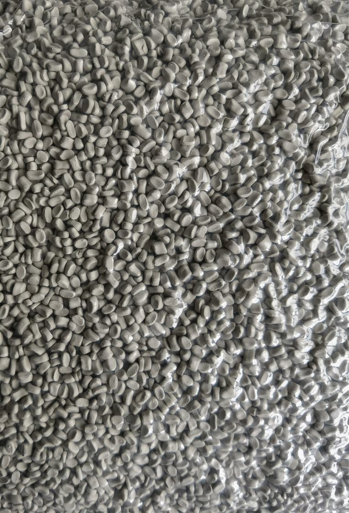

Sample or existing part
Describe the resin, process, part condition and how the sample was made, if known.
Color masterbatch / RFQ guide
For custom color masterbatch inquiries in PE, PP and other resins. Start with the reference type, process, end product and tolerance expectation before discussing a sample.



01 / Reference room
Every reference type is a buyer input for review. It starts the conversation; it does not by itself confirm matching, tolerance, sample timing or a current grade.
Describe the resin, process, part condition and how the sample was made, if known.
Provide the exact code and expected tolerance context. Matching is reviewed after RFQ.
Include the original file, reference conditions and the product under review.
Share the grade, resin, process and issue that makes replacement relevant.
Packaging, injection part, bag, household product or another end use.
State that clearly. A useful review can begin with resin, process and application.
02 / Review route
The sequence prevents a color name from hiding the technical facts that determine whether the brief can move forward.
Name the base resin and the current grade if one exists.
Describe how the material becomes the finished part.
Send a sample, code, photo, existing product or current grade.
State the buyer requirement without treating it as a matching guarantee.
03 / Application context
The final product influences the reference, processing context and how a potential sample should be discussed.

Part geometry, surface target, resin and current visual issue belong in the RFQ.
Bring the film structure, thickness and appearance reference.
Share the end customer reference, grade scope and document need.

Next step / Color RFQ
Share resin, process, end product, reference type, reference details, tolerance expectation and any document need. Color matching and sampling are reviewed case by case.